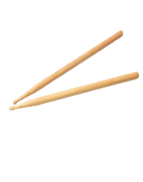
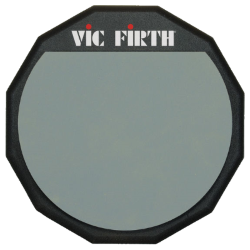
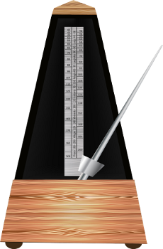

אימונים
הקדמה:
אימונים הם חלק בלתי נפרד. לפני שבכלל מתחילים ורצים לקנות מערכת תופים, צריך לעבור סידרת אימונים על החבר הכי טוב של כל מתופף מתחיל – הפד. הפד הוא משטח /עשוי גומי והוא שקט שמדמה הקשה על תוף. במקור, הפד נועד כדי לחמם את המתופפים מבלי שכל האולם ישמע אותם, וכיום הוא משמש מתופפים בעיקר לאימונים. המרכיב השלישי שלמעשה מרכיב את השילוש הקדוש הוא המטרונום, אשר נועד למעשה לתזמן את המכות. כל מתופף חייב לעבוד עם מטרונום, כדי לתזמן בצורה מדויקת את הזמן שבו הוא צריך להתחיל\להפסיק לתופף. כיום מטרונום ניתן להשיג חופשי דרך טלפונים חכמים, או דרך תוכנה במחשב. אז למעשה כדי להתחיל לתופף, צריך 3 מרכיבים חשובים: זוג מקלות, פד אימונים, ומטרונום.
  
מקלות תיפוף פד אימונים מטרונום - כיום כבר קיים בכל טלפון חכם
אוקיי, יש לי את שלושתם! מה עושים איתם כעת?
כעת מתחילים להתאמן. אתר זה אינו מתמקד בלמידה על תופים, אבל כן נזכיר על קצה המזלג את היסודות הבסיסיים שכל מתופף חייב לדעת. להלן, מקרא שעליו נתבסס:
- R - הקשה בצד ימין
- R - הדגשה בצד ימין
- L - הקשה בצד שמאל
- L - הדגשה בצד שמאל
- | : : | - סימני החזרה על התרגיל.
והנה הם, יסודות התופים:
- מכה אחת - | : R L R L R L R L : |
- מכה כפולה - | : R R L L R R L L : |
- פרדידל - | : R L R R L R L L : |
- פרפרדידל - | : R L R L R R L R L R L L : |
- פרפרפרדידל - | : R L R L R L R R L R L R L R L L : |
- פרפרדידל דידל - | : R L R R L L R L R R L L : |
- שלישיות - | : R L R L R L : |
את יסודות התופים כל מתופף חייב להכיר ולדעת. ואחרי שאתם כבר יודעים: אז תעשו זאת יותר מהר (תגבירו את קצב המטרונום). את ההמשך, אתם מוזמנים לפנות לסדרת המדריכים למתחילים של Drumeo, הוא חינמי לחלוטין, ומומלץ ממני בחום. אני השתמשתי בו בתחילת דרכי, והוא נתן לי מושג על כיצד להחזיק את המקלות, כיצד להחליף מקצבים, וכו'.
בהצלחה!